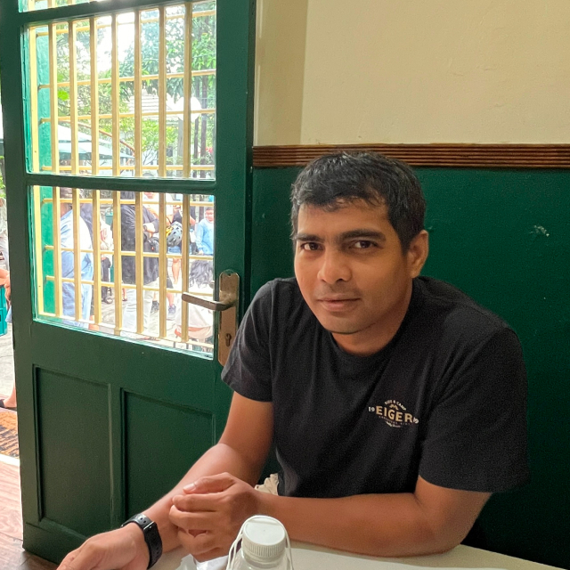
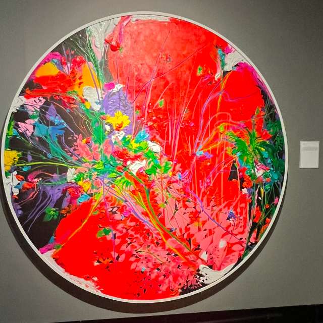
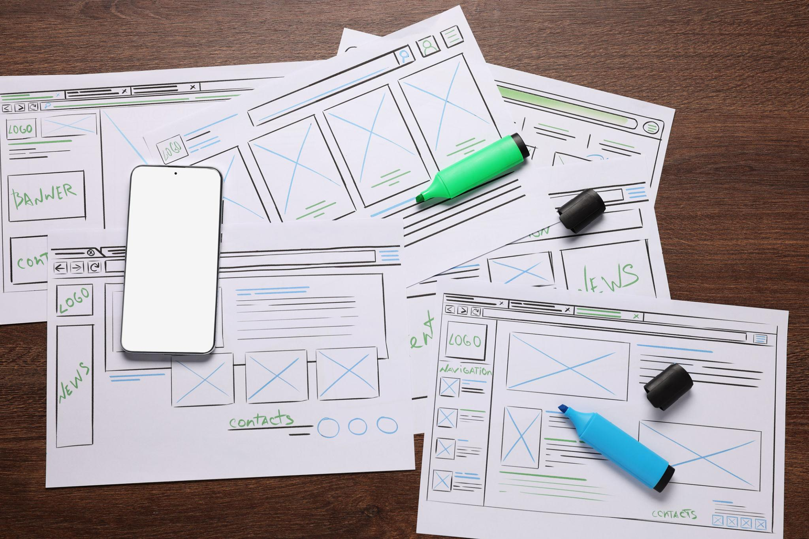

I’m a UI/UX designer with 7 years of experience focused on creating clear, structured, and user-centered digital experiences. I specialize in simplifying complex systems into intuitive interfaces—balancing visual clarity with functional usability.
My work spans across product design, corporate websites, and service-based platforms, with a strong emphasis on consistency and scalable design systems.

When I’m not designing, I enjoy activities that help me reset and stay inspired—whether it’s exploring new places, spending time at coffee shops, or observing everyday interactions and visual details.
I believe good design often comes from noticing small details in daily life.

I approach design by focusing on clarity, structure, and usability. I believe a good interface should feel intuitive, reduce friction, and guide users naturally toward their goals.
Rather than overcomplicating visuals, I prioritize thoughtful layout, hierarchy, and consistency across the experience.